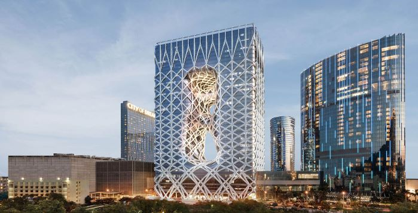

IMAGE ASSETS
I have used high resolution images and changed their display by reducing the pixels proportionally to fit the display, without losing quality. Their final resolution are between 550px width and 394px height, as per examples below, besides the Home page one, which I decided to keep a bigger size in order to gain attention.
Seatte Library by FRANK GEHRY
Original size,743px W - 591px H, 300dpi, 115KB
(on the "architects" page shown small - 560 x 445px, 300dpi, 58.8KB)

Morpheus Hotel in Macau by ZAHA HADID
(Its original size is 1920px W - 980px H, 96dpi)
This image is presented small under 699px width - 357px height (on the "architects" page as well) in order to fit the screen and keep its quality.
CCTV building in Beijing by REM KOOLHAAS
(On its original size,1200px W - 1556px H, 72dpi, 414KB)
CCTV building in Beijing by REM KOOLHAAS
(On medium,800px W - 1100px H, 72dpi)

CCTV building in Beijing by REM KOOLHAAS
(On small, 439px W - 569px H, 72dpi, 64.1KB)